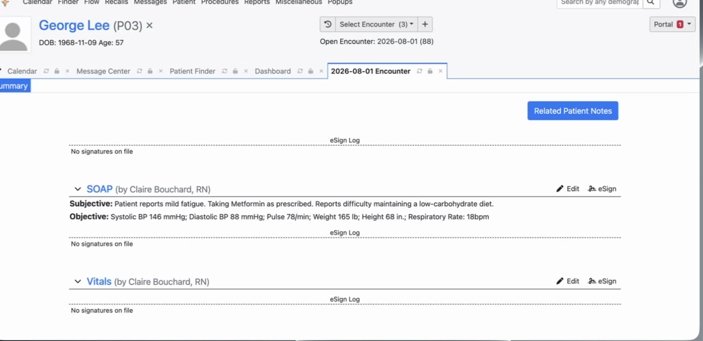
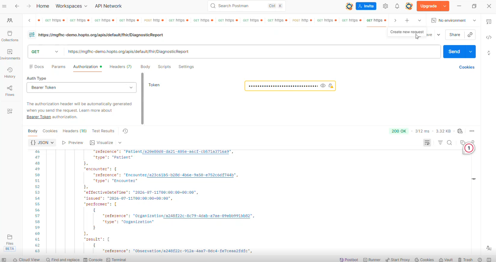
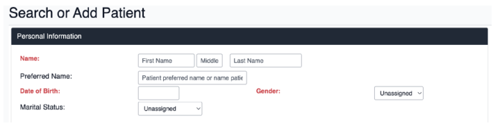
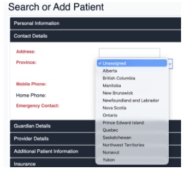
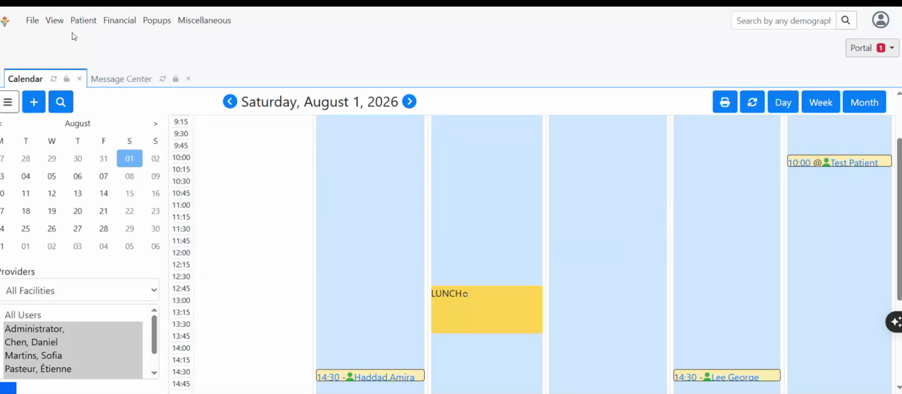
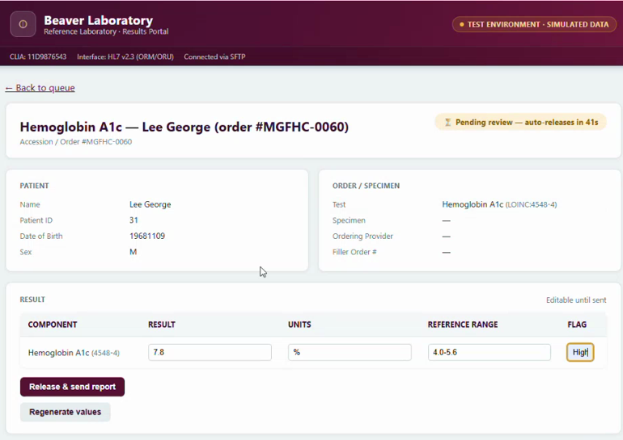
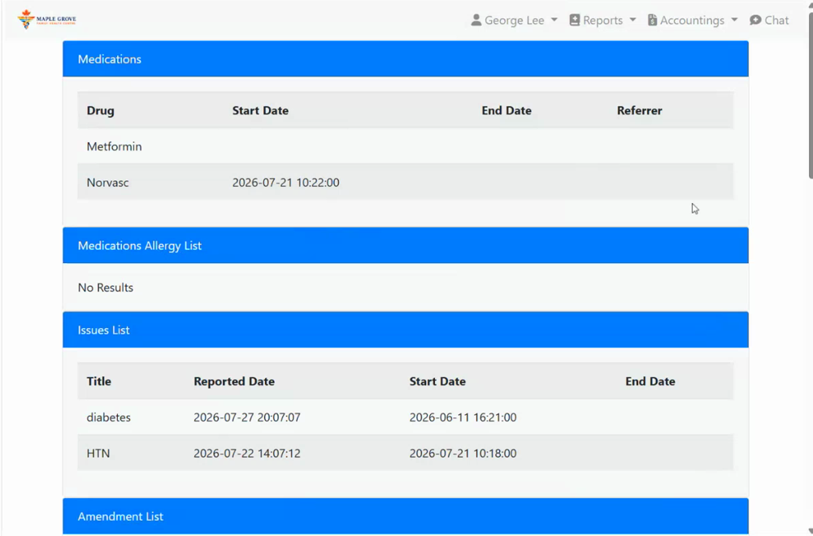

Simulated clinic
A student-created clinic identity gave every subteam the same clinical and operational context.
HiT4EMR · COMP 4090 · Health Informatics (T402)
A simulated OpenEMR implementation designed around a Toronto, Ontario primary-care context.
The HiT4EMR student team explored, configured, tested and documented a shared OpenEMR environment across clinical workflow, infrastructure, security, UI/UX, interoperability, analytics, QA and documentation.
The project
HiT4EMR is the COMP 4090 course project. The student cohort created Maple Grove Family Health Centre as a fictitious clinic identity and shared Toronto/Ontario primary-care context.
Teams then examined how OpenEMR could support that setting across clinical workflow, infrastructure, security, usability, interoperability, analytics and testing before bringing the subteams together around a shared MVP.
A student-created clinic identity gave every subteam the same clinical and operational context.
A browser-accessible OpenEMR 7.0.2 deployment on AWS supported final integration and demonstration.
Clinical, technical and operational subteams converged into shared workflows and evidence.

Project journey
Early work was distributed across teams and environments. By mid-July, the project narrowed around a shared MVP and common testing environment.
Clinical workflow
Research and clinical workflow work established the simulated clinic context and translated primary-care processes into journeys that could be exercised in OpenEMR.
Technology & standards
Core platform technologies are separated from languages, extensions and healthcare standards.
 D
DockerContainerized deployment
D
DockerContainerized deployment
 DB
MariaDBApplication database
DB
MariaDBApplication database
 PHPPHP
PHPPHP PYPython
PYPython HTMLHTML5
HTMLHTML5 CSSCSS
CSSCSSInteroperability
The team used OpenEMR’s FHIR API to retrieve clinical data and tested a mock lab order-and-result workflow with synthetic data.
Authenticated requests retrieved Patient, Observation and DiagnosticReport resources.
Orders and results were tested with a simulated lab, not a live external laboratory.

Subteams
The public showcase describes the project collectively while keeping each subteam visible.
Mapped clinic workflows and built the patient journeys used in testing.
Ran shared OpenEMR environments on AWS, including HTTPS, backups and troubleshooting.
Reviewed roles, access controls, privacy risks and production-readiness gaps.
Audited key workflows, applied feasible UI changes and proposed improvements.
Tested FHIR API access, HL7 lab workflows and supporting clinical standards.
Mapped useful KPIs to OpenEMR data and documented reporting limits.
Turned workflows into test cases and coordinated integrated testing and Go-Live.
Built user guides, role cards and the final project evidence package.
UI/UX example
The UI/UX team simplified registration labels and fields, then changed the province list from U.S. states to Canadian provinces and territories.


Integrated testing & Go-Live simulation
During the Go-Live simulation, three breakout rooms each ran a different patient journey. The exercise focused on whether role handoffs, permissions, documentation, lab activity, appointments and patient-facing interactions worked together in the configured environment.



The three patient scenarios were completed, but testing also found issues with role permissions, portal access, navigation, and some workflow handoffs. These were documented and used to improve project guidance and recommendations.
Lessons learned
Version and environment differences created avoidable integration friction.
A defined integration scope made cross-team testing much more manageable.
Roles, permissions and handoffs matter as much as individual features.
Clear guides, support and honest limitation notes made troubleshooting useful.
Beyond the simulation
Real clinical use would require additional privacy governance, security operations, recovery planning, monitoring and Ontario health-system integrations.
The project team
HiT4EMR was completed across eight subteams. This preview separates project leadership, key contributors and the wider cohort while keeping each person’s roles visible.
Preview only. Key contributor placement is tentative; final public names and roles should be confirmed with the cohort.
Green-highlighted cards recognize particularly significant contributions.
Roster preview based on the current roles spreadsheet and project feedback. Final public names and role labels should still be confirmed by each student.
{kind=link}
{kind=link}
{kind=link}
{kind=link}
{kind=link}
{kind=link}
{kind=link}